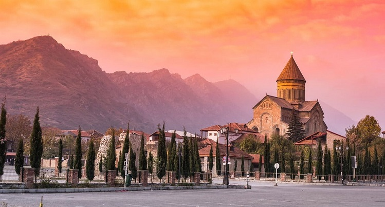
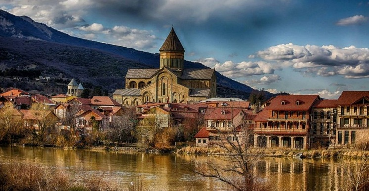
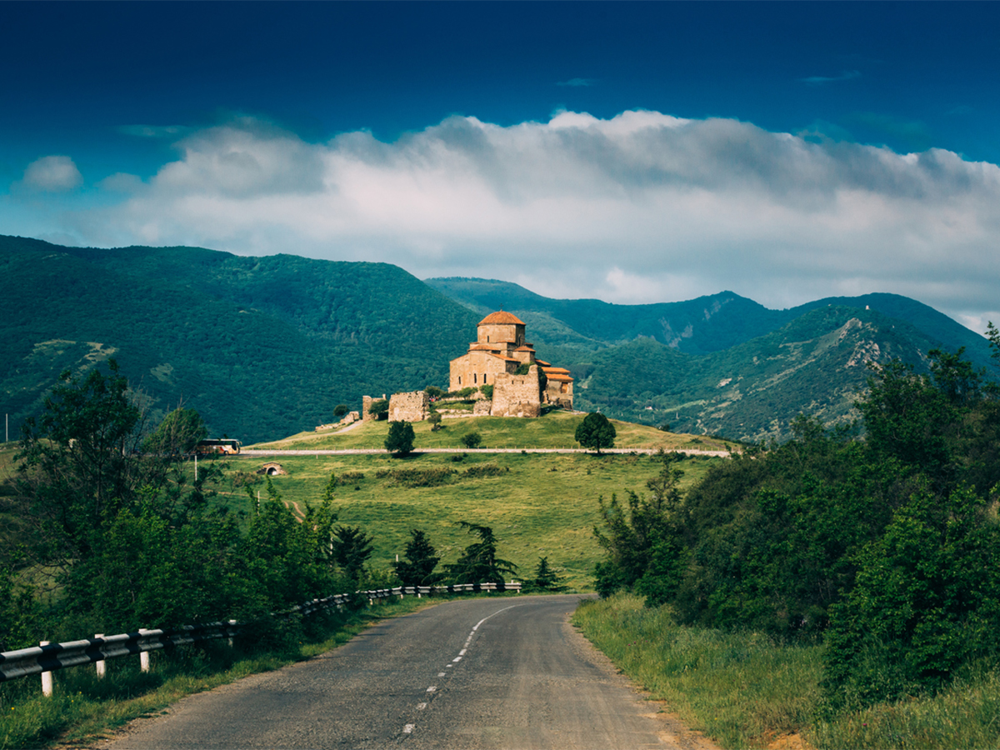
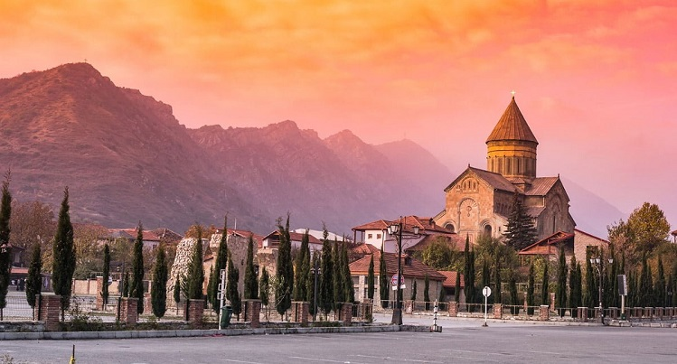
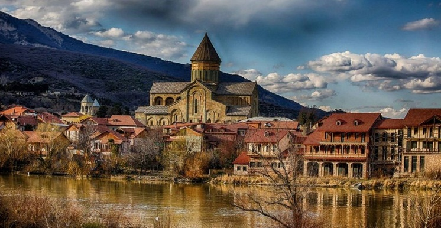
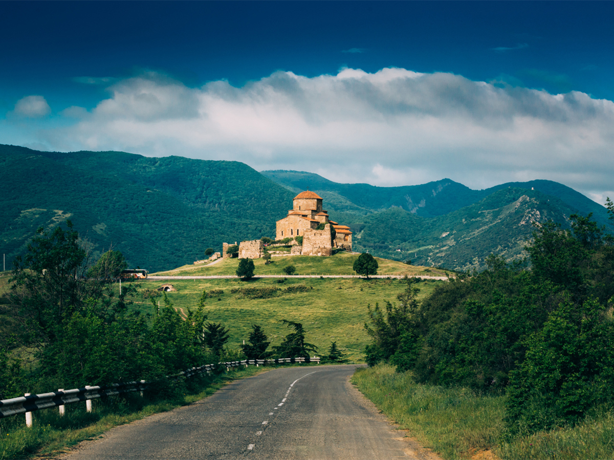
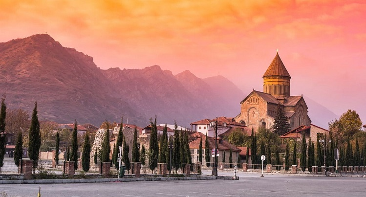
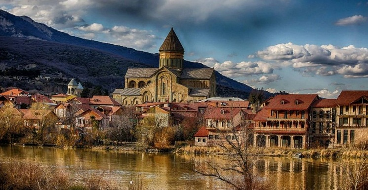
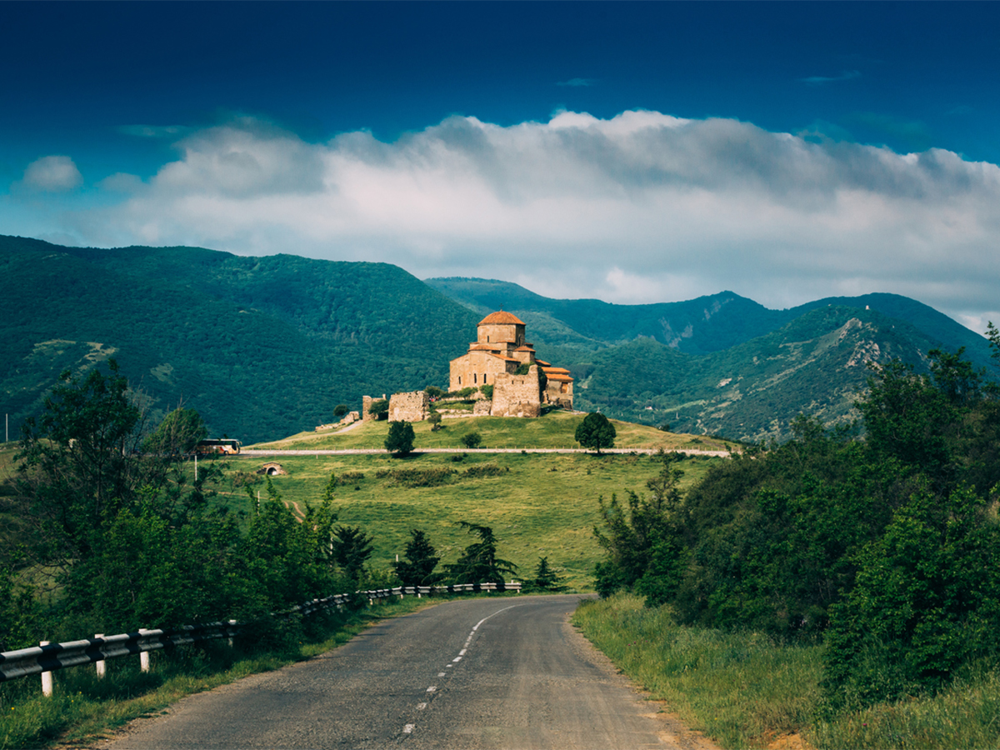

- Click for more information
-
   
   -
Spend your free time in Mtskheta and enjoy the beautiful places
Mtskheta (Georgian: მცხეთა, romanized: mtskheta) is a city in the region of Mtskheta-Mtianeti, Georgia. It is one of the oldest cities in Georgia as well as one of the oldest continuously inhabited cities in the world.[1] It is located approximately 20 km (12 mi) north of Tbilisi, at the confluence of the Mtkvari and Aragvi rivers. Currently a small provincial capital, for nearly a millennium until the 5th century AD, Mtskheta was a large fortified city, a significant economical and political centre of the Kingdom of Iberia. Due to the historical significance of the town and its several outstanding churches and cultural monuments, the "Historical Monuments of Mtskheta" became a UNESCO World Heritage Site in 1994. As the birthplace and one of the most vibrant centers of Christianity in Georgia, Mtskheta was declared as the "Holy City" by the Georgian Orthodox Church in 2014.[3] In 2016, the Historical Monuments of Mtskheta were placed by UNESCO under Enhanced Protection, a mechanism established by the 1999 Second Protocol to the 1954 Hague Convention for the Protection of Cultural Property in the Event of Armed Conflict. Capital of the Kingdom of Iberia Mtskheta was the capital of the early Georgian Kingdom of Iberia from the 3rd century BC to the 5th century AD. The chronicles mention that the Kingdom of Iberia and its capital were conquered by Alexander the Great in the 4th century BC, but certain historians do not accept this. Eventually, the ruler appointed by Alexander ruined the walls of Mtskheta and left only four fortresses, one of them known today as Armazi. Ancient sources of the 4th-3rd centuries BC mention that Mtskheta had a number of neighbourhoods. Among them, Armazis-tsikhe, Tzitzamuri, Jvari and others. Like other Georgian towns it was divided into the city proper and the citadel. Both the excavations and The Georgian chronicles tell about considerable construction in the Hellenistic period: residential houses, palaces and fortifications. New wall around Mtskheta was built by the first Georgian King Parnavaz in the beginning of the 3rd century BC, and later strengthened by his son Saurmag in the late 3rd - beginning of 2nd century BC. In the end of the 2nd century - beginning of the 1st, the King Parnajom strengthened his relations with Persians and invited Zoroastrian priests to settle in Mtskheta. This probably lead to construction of Zoroastrian temples in the city. Meanwhile, no such archeological evidences exist. Again the walls of Mtskheta were improved during the reign of Bartom in the 1st century BC, and later also by Aderki, often identified with Pharasmanes I. The latter king is associated with appearance of first Christian communities in Kartli and arrival of the Holy Tunic to Mtskheta, brought from Jerusalem by local Jews. The city was strongly fortified at that period. Walls were on both sides of Mtkvari River, and three forts were protecting it. The main citadel, Armazi, on Mount Bagineti was controlling the entrance from south and east, Tsitsamuri, at the base of Mount Jvari from the north, and Sarkine from the west. Mtskheta was a site of early Christian activity resulting in Christianization of Iberia, where Christianity was proclaimed the state religion in 337. It remains the headquarters of the Georgian Orthodox Church. Around that period Mtskheta was a culturally developed city. A gravestone dated between the end of 4th and beginning and 5th centuries, found in Samtavro necropolis, contains an epitaph in Greek, telling about the main architect and archizograph (artist) of Mtskheta Aurelius Acholis. In the first years after the conversion of Georgia into Christianity, a small wooden church was built in the center of the city, later to become Svetitskhoveli Cathedral. Archeological excavations revealed the remnants of the wooden church within the cathedral. By the 5th century AD the small church was no longer satisfying the growing community of the city, and Vakhtang Gorgasali built a large basilica, the greatest Assumption church in Georgia, Svetitskhoveli, that survived until 11th century. The first katolikos was elected in the 5th century, and his residence was in Svetotskhoveli, in Mtskheta. By the 11th century, the earlier basilica of Svetitskhoveli was again too small, and Katolikos Melchizedek I built a new church on top of it.
  